A continuación se presentan algunas reglas básicas del lenguaje JavaScript:
- Una variable es una posición de memoria donde se pueden alojar datos. El nombre de la variable permitirá a JavaScript poder ubicar y localizar dicho espacio cuando interprete los scripts. Cuando sea necesario declarar una variable, se utilizará la palabra reservada var. Cuando deseemos realizar la asignación de un valor, usaremos el símbolo igual (=). Podemos realizar la asignación en la propia declaración de la variable o podemos hacerlo en dos líneas diferentes.
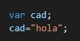
- Las instrucciones en JavaScript terminan en punto y coma, al igual que en los lenguajes de programación C.C++ o Java. Podría omitirse si escribimos cada instrucción en una línea independiente pero vamos a optar por ponerlo siempre. Ejemplo:
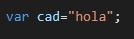
- ¿Para qué sirve la palabra reservada let?. Sirve también para declarar variables. La diferencia que existe entre ambas es que cuando se declara una variable con var, puede ser usada fuera del bloque donde fue declarada. Sin embargo, con let solo puede ser usada en dicho bloque.
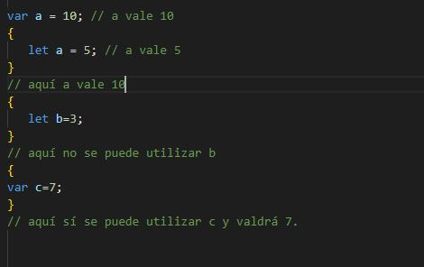
- Para el uso de constantes se usa la palabra reservada const.
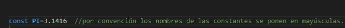
- Uso de decimales en JavaScript. Los números de JavaScript que tengan decimales utilizarán el punto como separador de las unidades con la parte decimal. Ejemplos de números:
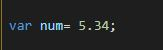
- Los valores o literales, cuando representen una cadena de texto, se pueden escribir entre comillas dobles o simples. Ejemplo:
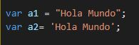
- Se pueden usar los siguientes operadores aritméticos: + - * /.
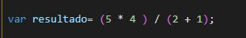
- En las expresiones también se pueden usar variables (que han tenido que ser declaradas e inicializadas antes). Ejemplo:
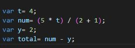
- Los identificadores en JavaScript comienzan por una letra o la barra baja (_) o el símbolo del dólar($). A la hora de dar nombres a las variables, tendremos que poner nombres que realmente describan el contenido de la variable. No podremos usar palabras reservadas, ni símbolos de puntuación en el medio de la variable, ni la variable podrá contener espacios en blanco. Los nombres de las variables han de construirse con caracteres alfanuméricos y el carácter subrayado ( _ ). No podremos utilizar caracteres raros como el signo +, un espacio, % etc. en los nombres de variables, y estos nombres no podrán comenzar con un número. . Ejemplo:
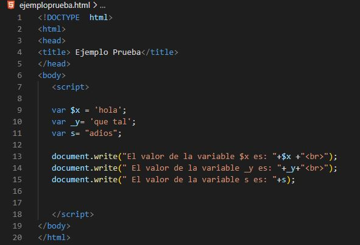
- Si queremos nombrar variables con dos palabras, tendremos que separarlas con el símbolo "_" o bien diferenciando las palabras con una mayúscula, por ejemplo:
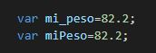
- JavaScript es sensible a mayúsculas y minúsculas (case-sensitive). Ejemplo:
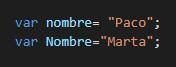
- JavaScript ignora los espacios, las tabulaciones y los saltos de línea presentes entre los símbolos del código. A pesar de esto, cuando los programas empiezan a ser complejos, podemos apreciar la utilidad de emplear las tabulaciones y los saltos de línea adecuados para mejorar la presentación y la legibilidad del código. A continuación podemos observar la diferencia entre un código bien estructurado que facilita la lectura y un código que no está bien estructurado:
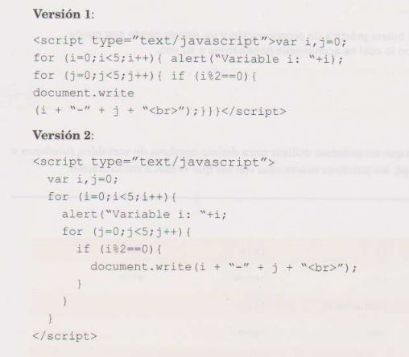